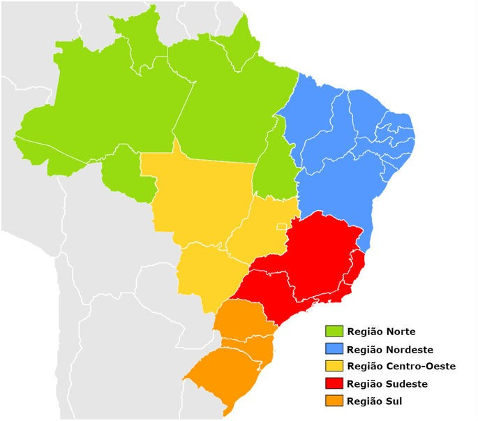

<DOCTYPE html>
<html lang="en">
<head>
    <meta charset="UTF-8">
    <meta http-equiv="X-UA-Compatible" content="IE=edge">
    <meta name="viewport" content="width=device-width, initial-scale=1.0">
    <title>Mapeando Links &lt;map&gt; e &lt;area&gt;</title>
</head>
<body>
    
<!-- <map> == diplay: none;
    Mapeando Links -->
<!-- <area> == diplay: inline;
    define uma área(clicável) dentro de um mapa de imagem -->
<!-- A tag <map> deve ser usada com outras duas tags: <area> e .

    <map> -> mapeia a imagem, tornando-a um link.
     -> exibe a imagem que será usada para configurar como link.
    <area> -> define as coodernadas/dimensão do link.-->
<!--Parametro da tag <area>-->
<!-- shape="" -> define a forma da imagem:
    
        ="rect" -> retângular;
        ="circle" -> circular;
        ="poly" -> Poligonal;
        ="default" -> padrão -->
<!--Coords="" -> As coordenadas geográficas -->
<!--href="" -> localiação do link. pode ser usadas outros parâmetros igual na tag <a> âncora -->
<!-- alt="" -> texto alternativo, caso o link não abra no navegador.-->

    
    <map name="mapaBrasil">
        <area shape="poly" coords="340,368,351,347,385,344,396,300,438,286,492,313,467,375,447,399,402,412,387,370,346,367" href="https://www.google.com/maps/place/Minas+Gerais/@-18.5246975,-49.9478505,6z/data=!3m1!4b1!4m5!3m4!1s0xa690a165324289:0x112170c9379de7b3!8m2!3d-17.930178!4d-43.7908453" target="_blank" alt="Minas Gerais">

        <area shape="poly" coords="373,154,389,160,384,189,398,196,390,213,403,229,413,229,402,245,406,270,373,273,342,266,350,213,366,191,362,181,378,164" href="https://www.google.com/maps/place/Tocantins/@-9.29004,-52.7217863,6z/data=!3m1!4b1!4m5!3m4!1s0x9323501f52b13997:0xe3d4866245cc396c!8m2!3d-11.4098737!4d-48.7191423" target="_blank" alt="Tocantins">

        <area shape="rect" coords="94,74,232,231" href="https://www.to.gov.br/" target="_blank" alt="Site Tocantins">
        
        <area shape="circle" coords="510,210,50" href="https://www.ecycle.com.br/polo-norte/" target=“_blank” alt="Curiosidade e segredos do polo norte">
    </map>
</body>